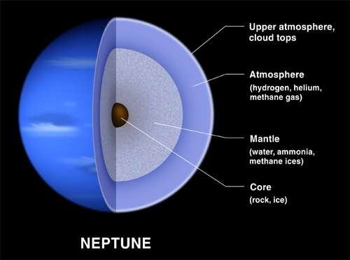

Dark, cold and whipped by supersonic winds, ice giant Neptune is the eighth and most distant planet in our solar system. More than 30 times as far from the Sun as Earth, Neptune is the only planet in our solar system not visible to the naked eye. In 2011 Neptune completed its first 165-year orbit since its discovery in 1846. Neptune is so far from the Sun that high noon on the big blue planet would seem like dim twilight to us. The warm light we see here on our home planet is roughly 900 times as bright as sunlight on Neptune.
The ice giant Neptune was the first planet located through mathematical calculations. Using predictions made by Urbain Le Verrier, Johann Galle discovered the planet in 1846. The planet is named after the Roman god of the sea, as suggested by Le Verrier.

With a radius of 15,299.4 miles (24,622 kilometers), Neptune is about four times wider than Earth. If Earth were the size of a nickel, Neptune would be about as big as a baseball.
From an average distance of 2.8 billion miles (4.5 billion kilometers), Neptune is 30 astronomical units away from the Sun. One astronomical unit (abbreviated as AU), is the distance from the Sun to Earth. From this distance, it takes sunlight 4 hours to travel from the Sun to Neptune.
Neptune took shape when the rest of the solar system formed about 4.5 billion years ago, when gravity pulled swirling gas and dust in to become this ice giant. Like its neighbor Uranus, Neptune likely formed closer to the Sun and moved to the outer solar system about 4 billion years ago.
Neptune is one of two ice giants in the outer solar system (the other is Uranus). Most (80 percent or more) of the planet's mass is made up of a hot dense fluid of "icy" materials—water, methane and ammonia—above a small, rocky core. Of the giant planets, Neptune is the densest. Scientists think there might be an ocean of super hot water under Neptune's cold clouds. It does not boil away because incredibly high pressure keeps it locked inside. s
Neptune's environment is not conducive to life as we know it. The temperatures, pressures and materials that characterize this planet are most likely too extreme and volatile for organisms to adapt to.
There are more than 150 known moons in our solar system and several
more awaiting confirmation of discovery. Of the eight planets, Mercury
and Venus are the only ones with no moons. The giant planets grab the
most moons. Jupiter and Saturn have long lead our solar system’s moon
counts.
In some ways, the swarms of moons around these worlds resemble mini
versions of our solar system. Pluto, smaller than our own moon, has
five moons in its orbit, including the Charon, a moon so large it
makes Pluto wobble. Even tiny asteroids can have moons. In 2017,
scientists found asteroid 3122 Florence had two tiny moons.